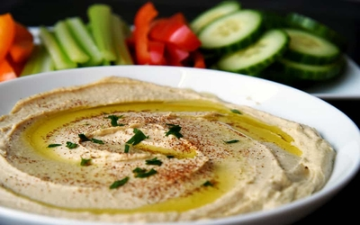

Arabic Hummus Recipe

Main Ingredients
- 1 can (15 oz) chickpeas, drained and rinsed
- 1/4 cup tahini (sesame paste)
- 3 tablespoons lemon juice
- 1-2 cloves garlic, minced
- 1/2 teaspoon ground cumin
- Salt, to taste
- 3 tablespoons olive oil
- 2-3 tablespoons water
Garnish
- Extra virgin olive oil, for drizzling
- Paprika, for sprinkling
- Fresh parsley, chopped, for garnish
Preparation Steps
- In a food processor, combine chickpeas, tahini, lemon juice, minced garlic, ground cumin, and salt.
- Process until smooth, scraping down the sides of the bowl as needed.
- While the processor is running, drizzle in olive oil and water until the hummus reaches a creamy consistency.
- Taste and adjust seasoning if needed.
- Transfer hummus to a serving bowl. Create a swirl pattern on the surface with the back of a spoon.
- Drizzle with extra virgin olive oil, sprinkle with paprika, and garnish with chopped parsley.
- Serve hummus with pita bread, fresh vegetables, or as desired.
Tips
- For a smoother hummus, peel the chickpeas before processing.
- Adjust the consistency by adding more water or olive oil if desired.
- Store leftover hummus in an airtight container in the refrigerator for up to one week.